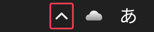
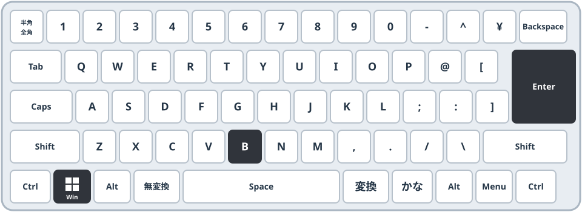

画面右下（時計の近く）に常駐している、使わないアプリを終了します。
ゴール最終的にこの状態になればOK
確認ポイント
- 「︿」の中に、不要なアプリのアイコンが残っていない
- セキュリティ・IME・音量・ネットワークは終了していない
やり方下の手順で進めます
- 画面右下の時計の左にある 「︿」（隠れているインジケーターを表示します） をクリックします。
- アイコンの一覧が表示されます。終了したいアプリのアイコンを右クリックします。
- メニューから「終了」または「閉じる」を選びます。
方法A マウスで「︿」をクリック

方法B キーボードで Windows ＋ B → Enter
